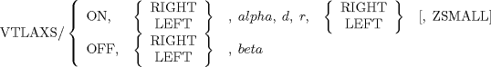
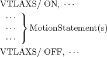
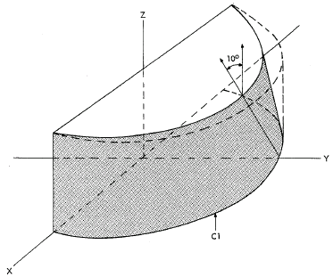
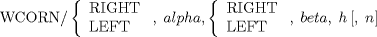
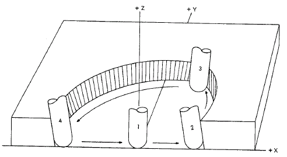

| 13.4. Special Transformation Statements (VTLAXS, WCORN) | ||
|---|---|---|
 | Chapter 13. Cutter Path Transformation Statements |  |
| 13.4. Special Transformation Statements (VTLAXS, WCORN) | ||
|---|---|---|
| | Chapter 13. Cutter Path Transformation Statements | |
A special transformation capability is provided that can be used to prorate cutter axial change linearly as a function of the distance traveled along a cutter path. The processor first computes the required cutter path (which must be two-dimensional only, that is, must be at a constant Z height) and then reworks the path to achieve a given starting axis angle, ending axis angle, and a linear proration of angular change along the path. Figure 13.3 and Figure 13.4 illustrate the types of parts that can be cut using this capability.
The following conditions must be fulfilled before the special transformation capability can be used.
The cutter path before transformation is applied must be at a constant Z height.
MULTAX must be specified in the part program, and, before transformation is applied, the tool axis vector must be 0, 0, 1 throughout the path to be transformed.
The cutter path must not contain any inflections. Figure 13.5 illustrates this requirement.
Path A: No inflection, OK
Path B: No inflection, OK
Path C: Inflection, special transformation not allowed.
The VTLAXS statement is used to define the special transformation to be performed. The general format for the VTLAXS statement is:

Two VTLAXS statements are used for each section of cutter path to be transformed. Motion statements included between the two VTLAXS commands define the actual path segment.

Initial cutter orientation and type are defined by the parameters after the VTLAXS/ON statement.
ON
Indicates that the following motion statements will define cutter path to be transformed.
RIGHT or LEFT (1st instance)
Specifies the initial direction from vertical that the cutter tilt angle is to be made relative to the direction of cutter motion. (see Figure 13.6)
alpha
The initial cutter tilt angle in degrees from vertical (less than 80 degrees).
d
The cutter diameter.
r
The cutter corner radius.
RIGHT or LEFT (2nd instance)
Specifies on which side of the drive surface the cutter is located along the direction of cutter motion. (see Figure 13.7)
ZSMALL
Specifies desired cutter penetration into the part surface. Use this parameter when the cutter orientation in Figure 13.8 is desired. Leave this field blank (omit comma also) if the cutter orientation in Figure 13.9 is desired (This parameter has no effect on cutter orientation when the cutter tilt angle is as illustrated in Figure 13.10).
![[Note]](images/note.png) | Note |
|---|---|
The ZSMALL parameter cannot be used unless r, the cutter corner radius is zero. |
Terminal cutter orientation is defined by the parameters after the VTLAXS/ OFF, statement.
OFF
Indicates the end of all motion statements defining the cutter path to be transformed.
RIGHT or LEFT
Specifies the terminal direction from vertical that the cutter tilt angle is to be made relative to the direction of cutter motion.
beta
The terminal cutter tilt angle in degrees from vertical (less than 80 degrees).
Example 13.1 displays the use of the VTLAXS statement. Statements labeled 1 through 3 position the cutter to perform the swarf cut. The actual cut sequence with the desired cutter axis transformation is generated by statements labeled 4 and 5. The last statement, labeled 6, is used to clear the part before returning to the set point.
Example 13.1. VTLAXS Usage
MULTAX/ ON $$ Geometry definition $$ ******************************* SP = POINT/ 3, -4, 4 C1 = CIRCLE/ 0, 0, 0, 6 P0 = PLANE/ 0, 0, 1, 0 P1 = PLANE/ 0, 1, 0, -2 P2 = PLANE/ 1, 0, 0, -6 P3 = PLANE/ 1, 0, 0, 6 P4 = PLANE/ 0, 1, 0, 0 P5 = PLANE/ 1, 0, 0, 0 $$ ****************************** TLAXIS/ (VECTOR/ 0, 0, 1) CUTTER/ 2 $$ Cutter motion $$ ****************************** 1) FROM/ SP 2) GO/ PAST, P3, P0 3) TLRGT, GOLFT/ P3, ON, P4 VTLAXS/ ON, LEFT, 0, 2, 0, RIGHT 4) GOFWD/ C1, ON, P5 VTLAXS/ OFF, LEFT, 10 VTLAXS/ ON, LEFT, 10, 2, 0, RIGHT 5) GOFWD/ C1, ON, P4 VTLAXS/ OFF, LEFT, 0 6) GOFWD/ P2, PAST, P1 GOTO/ SP $$ ****************************** FINI
The WCORN statement may be used in conjunction with the VTLAXS statement to clean out inside corners, as illustrated in Figure 13.11. The WCORN statement is placed between a VTLAXS/ ON and its corresponding VTLAXS/ OFF statement. It is placed immediately after the motion statement that moves the cutter into the corner to be processed. Only on WCORN statement can appear between VTLAXS/ ON and VTLAXS/ OFF statements. However, several sets of these statements (VTLAXS/ON, WCORN, VTLAXS/OFF, ...) may be used in a part program. The general format for the WCORN statement is:

Transitional cutter axes vectors are generated for the corner according to the definition of the parameters after the WCORN/statement.
RIGHT or LEFT (1st instance)
Specifies the initial direction from vertical that the cutter tilt angle is to be made relative to the direction of the cutter motion.
alpha
The initial cutter tilt angle in degrees from the vertical (less than 80 degrees).
RIGHT or LEFT (2nd instance)
Specifies the terminal direction from vertical that the cutter tilt angle is to be made relative to the direction of cutter motion.
beta
The terminal cutter tilt angle in degrees from the vertical (less than 80 degrees).
h
The vertical height of flange (drive surface).
n
The number of steps to be taken on each side of the corner. Leave this field blank (omit comma also) if the value 6 is desired
| Note |
|---|---|
Each step will be defined by the APT processor so that it is >= .0005. |
Example 13.2 displays the use of the WCORN statement. Statements labeled 1 and 2 position the cutter to perform the swarf cut. The actual cut sequence with the desired cutter axis transition is generated by statements labeled 3 and 4. The last statement, labeled 5, returns to the set point.
Example 13.2. WCORN Example Usage
MULTAX/ ON $$ Geometry definition $$ *************************************** SP = POINT/ 0, 0, 0 C1 = CIRCLE/ CENTER, -4, -4, 0, RADIUS, 14 C2 = CIRCLE/ CENTER, 6, -7, 0, RADIUS, 17 L1 = LINE/ 0, 0, 1, 0 $$ *************************************** TLAXIS/ (VECTOR/ 0, 0, 1) CUTTER/ 2 $$ Cutter motion $$ *************************************** 1) FROM/ SP INDIRV/ 1, 0, 0 2) GO/ C1 VTLAXS/ ON, LEFT, 10, 2, .5, LEFT 3) TLLFT, GOLFT/ C1, TO, C2 WCORN/ LEFT, 5, RIGHT, 6, 1 4) GOFWD/ C2, ON, L1 VTLAXS/ OFF, RIGHT, 8 5) GOTO/ SP $$ *************************************** FINI
| |  | |
| 13.3. Combined Use of TRACUT and COPY |  | Chapter 14. Special Techniques |